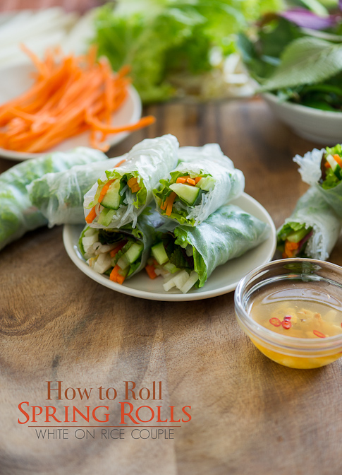

Vietnamese Fresh Spring Rolls

About this spring rolls
These Vietnamese spring rolls are a refreshing change from the usual fried variety and have become a family favorite.
They are a great summertime appetizer and delicious dipped in one or both of the sauces.
You will find the full, step-by-step recipe below — but here is a
brief overview of what you can expect when you make Vietnamese spring rolls:
Ingridients
Spring Roll
- 2 ounces rice vermicelli
- 8 rice wrappers (8.5 inch diameter)
- 8 large cooked shrimp - peeled, deveined and cut in half
- 2 leaves lettuce, chopped
- 3 tablespoons chopped fresh mint leaves
- 3 tablespoons chopped fresh cilantro
- 1 ⅓ tablespoons chopped fresh Thai basil
Sauce
- ¼ cup water
- 2 tablespoons fresh lime juice
- 2 tablespoons white sugar
- 4 teaspoons fish sauce
- 1 clove garlic, minced
- ½ teaspoon garlic chili sauce
- 3 tablespoons hoisin sauce
- 1 teaspoon finely chopped peanuts
How to make step by step
- Cook the pasta.
- Soften each wrapper in warm water, then add the filling ingredients.
- Fold and roll each spring roll.
- Make the sauces to serve with the spring rolls.
Other Recipes